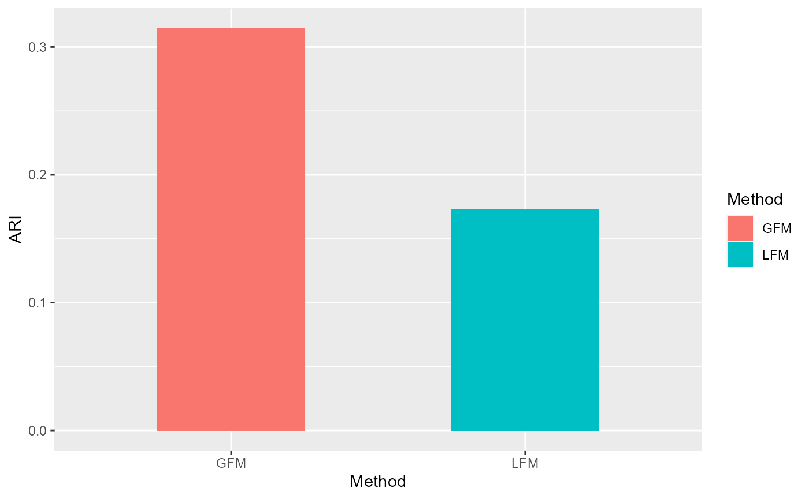

GFM.Brain.RmdFirst, we load the ‘GFM’ package and the real data which can be downloaded at ‘here’ (https://pan.baidu.com/s/1ralmQYqcW3XatLHbBrMXEw) and extraction code being ‘sppy’. This data is in the format of ‘.Rdata’ that inludes a gene expression matrix ‘X’ with 3460 rows (cells) and 2000 columns (genes), a vector ‘group’ specifying two groups of variable types (‘type’ variable) including ‘gaussian’ and ‘poisson’ and a vector ‘y’ meaning the clusters of cells annotated by experts. We compare the performance of ‘GFM’ and ‘LFM’ in downstream clustering analysis based on the benchchmarked clusters ‘y’.
library("GFM")
#> Loading required package: doSNOW
#> Warning: package 'doSNOW' was built under R version 4.0.5
#> Loading required package: foreach
#> Loading required package: iterators
#> Loading required package: snow
#> Warning: package 'snow' was built under R version 4.0.5
#> Loading required package: parallel
#>
#> Attaching package: 'parallel'
#> The following objects are masked from 'package:snow':
#>
#> clusterApply, clusterApplyLB, clusterCall, clusterEvalQ,
#> clusterExport, clusterMap, clusterSplit, makeCluster, parApply,
#> parCapply, parLapply, parRapply, parSapply, splitIndices,
#> stopCluster
load("D:\\Dropbox\\MixImpute\\Rcode\\RealData\\BrainSTdata\\Brain76.Rdata")
ls() # check the variables
#> [1] "group" "type" "X" "y"We fit the GFM model using ‘gfm’ function.
q <- 15
gfm1 <- gfm(X, group, type, q= q, output = FALSE)
#> Starting the alternate minimization algorithm...
#> Finish the iterative algorithm...We conduct the clustering analysis based on the extracted factors by GFM and evaluate the adjusted rand index (ARI) value based on the annotated cluster labels by experts.
hH <- gfm1$hH
library(mclust)
#> Warning: package 'mclust' was built under R version 4.0.5
#> Package 'mclust' version 5.4.8
#> Type 'citation("mclust")' for citing this R package in publications.
set.seed(1)
gmm1 <- Mclust(hH, G=7)
ARI_gfm <- adjustedRandIndex(gmm1$classification, y)We fit linear factor model using same number of factors.
fac <- Factorm(X, q=15)
hH_lfm <- fac$hH
set.seed(1)
gmm2 <- Mclust(hH_lfm, G=7)
ARI_lfm <- adjustedRandIndex(gmm2$classification, y)Compare with the ARIs by visualization.
library(ggplot2)
df1 <- data.frame(ARI= c(ARI_gfm,ARI_lfm),
Method =factor(c('GFM', "LFM")))
ggplot(data=df1, aes(x=Method, y=ARI, fill=Method)) + geom_bar(position = "dodge", stat="identity",width = 0.5)